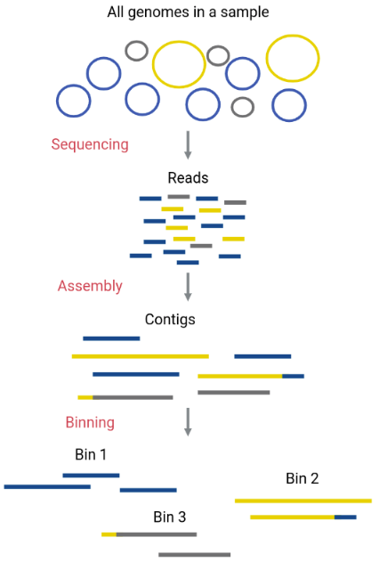

Extracting Functional Information
Now we are ready to start doing analysis of our metagenomic assembly!
A new assembly
In the last two lessons we constructed and polished an assembly based on a subset of a bigger dataset. That’s why our nano_fastq file was called ERR5000342_sub12.fastq - it contained a randomly chosen 12% subset of the original dataset. We did this because the full nano_fastq dataset contains over 2 million reads, and the instance doesn’t have enough computing power to cope with that much data.
Subsetting your data is a great way to practice and troubleshoot workflows like the one we’re following in this course. However, only assembling 12% of the reads means the assembly is far less likely to be complete. We saw the effects of this when we used seqkit and MetaQUAST to quality check our assemblies in the last lesson. Only about 0.2-0.3% of the genomes were complete.
Fortunately, we have access to an assembly that was generated from the full ERR5000342.fastq long read dataset. The process to generate and polish it was exactly the same; we just started with a larger dataset (2,000,000 reads compared to 300,000 reads). Now that we are onto analysis, which relies on having a strong assembly, we will switch to using this bigger assembly.
Where to find the new assembly
The new assembly is stored in a hidden file in our data directory. Let’s take a look using the -a flag for ls.
Code
cd ~/cs_course/data
ls -aOutput
illumina_fastq/ nano_fastq/ .assembly_ERR5000342.fasta.gzThe .gz extension means the file is zipped using the command gzip. Gzip stores files in a compressed format so they take up less space. It can be reversed with the command gunzip.
Code
gunzip .assembly_ERR5000342.fasta.gzNow the assembly is unzipped, the .gz extension is gone.
Code
ls -aOutput
illumina_fastq/ nano_fastq/ .assembly_ERR5000342.fastaLet’s rename the file to get rid of the . at the start and put it into its own directory called full_assembly.
Code
mv .assembly_ERR5000342.fasta assembly_ERR5000342.fasta
mkdir full_assembly
mv assembly_ERR5000342.fasta full_assembly/Now we’re ready to start binning!
Metagenomic binning
Now we can start to separate out the individual genomes using a process called binning. This will allow us to analyse each of the species inside our sample individually. We call these genomes metagenome-assembled genomes (MAGs).
The assembled contigs that make up the metagenome will be assigned to different “bins” (FASTA files that contain certain contigs). Ideally, each bin will correspond to one original genome only (a MAG).
As we covered in the assembly section, assembling the pieces of a metagenome is more difficult compared to single genome assembly. Most assemblers are not able to reconstruct complete genomes for the organisms that are represented in the metagenome - even using our new bigger dataset. As a result each organism will be represented by multiple contigs following assembly and polishing. This means that we need to be able to separate these contigs so we can identify which belong to each organism in our metagenome. This is where binning comes in.

One way to separate contigs that belong to different species is by their taxonomic assignation. However, this can be time consuming and require a lot of computational power. There are easier methods that perform binning to a high quality using characteristics of the contigs, such as their GC content, their tetranucleotide frequencies (TNF), their coverage (abundance), sets of marker genes, taxonomic aligments and their preferred codons.
Most binning tools use short reads for the binning; only a few use Hi-C sequencing. Hi-C is a method of sequencing that gives spatial proximity information, as described here. Different tools use different algorithms for performing the binning. A few popular tools are summarised below. For more information see Section 2.4 (Tools for metagenome binning) of this review.
| Tool | Core algorithm | Website | Publication |
|---|---|---|---|
| MaxBin2 | Expectation-maximization | http://sourceforge.net/projects/maxbin/ | Wu et al, 2016 |
| CONCOCT | GaussiAN Mixture Models | https://github.com/BinPro/CONCOCT | Alneberg et al, 2014 |
| MetaBAT2 | Label propagation | https://bitbucket.org/berkeleylab/metabat | Kang et al, 2019 |
There are other tools that bin MAGs using several different methods and then further refine these bins. DAStool, MetaWRAP and Metagenome Assembled Genomes Orchestra MAGO are capable of doing this.
MetaBAT2 is a binning algorithm that distinguishes between contigs that belong to different bins according to their coverage levels and the tetranucleotide frequencies they have. We will be using this algorithm for our binning today, but first we need to prepare our assembly.
Preparation for binning
This preparation process follows exactly the same steps we used to prepare our long-read polished assembly for short-read polishing. We need to align our short reads to our assembly to determine depth-of-coverage — how many reads align to each portion of the assembly.
First we index the polished reference using bwa index. Remember, we’re using our new assembly which is in our data/full_assembly directory. The outputs will automatically be put in the same folder as the assembly, as they should always stay together.
Code
cd ~/cs_course
bwa index data/full_assembly/assembly_ERR5000342.fastaThis is a big file so indexing will take about 4-5 minutes to complete. We ran this command in the foreground so you won’t be able to use your prompt until it’s finished.
We then make a directory for the output of our binning.
Code
mkdir results/binningWe can then use an adapted form of the bwa mem command we used earlier to align our short reads to the polished assembly and determine the abundance of each contig.
Code
( bwa mem -t 8 data/full_assembly/assembly_ERR5000342.fasta data/illumina_fastq/ERR4998593_1.fastq data/illumina_fastq/ERR4998593_2.fastq | samtools view - -Sb | samtools sort - -@8 -o results/binning/assembly_short_read_alignment.bam ) &> results/binning/alignment.out &This should take around 80 minutes to complete.
Once the file is created, we can check the alignment.out log file.
Code
cd results/binning
less alignment.outThe start of the file should look like this:
Output
[M::bwa_idx_load_from_disk] read 0 ALT contigs
[M::process] read 529802 sequences (80000102 bp)...
[M::process] read 529802 sequences (80000102 bp)...
[M::mem_pestat] # candidate unique pairs for (FF, FR, RF, RR): (23, 49949, 37, 28)
[M::mem_pestat] analyzing insert size distribution for orientation FF...
[M::mem_pestat] (25, 50, 75) percentile: (7, 872, 2681)
[M::mem_pestat] low and high boundaries for computing mean and std.dev: (1, 8029)
[M::mem_pestat] mean and std.dev: (1744.43, 2239.00)
[M::mem_pestat] low and high boundaries for proper pairs: (1, 10703)
[M::mem_pestat] analyzing insert size distribution for orientation FR...
[M::mem_pestat] (25, 50, 75) percentile: (347, 430, 555)
[M::mem_pestat] low and high boundaries for computing mean and std.dev: (1, 971)
[M::mem_pestat] mean and std.dev: (453.47, 163.23)If we scroll down, the end should look like this:
Output
[M::mem_process_seqs] Processed 182762 reads in 84.398 CPU sec, 11.894 real sec
[main] Version: 0.7.17-r1188
[main] CMD: bwa mem -t 8 ../../data/full_assembly/assembly_ERR5000342.fasta ../../data/illumina_fastq/ERR4998593_1.fastq ../../data/illumina_fastq/ERR4998593_2.fastq
[main] Real time: 4154.680 sec; CPU: 30896.696 sec
[bam_sort_core] merging from 7 files and 4 in-memory blocks...We can also check that the new BAM file exists using ls.
Code
lsOutput
alignment.out assembly_short_read_alignment.bamIn order to use this new BAM with MetaBAT2 we also need to index the alignment using the command samtools index. This only takes 2-3 minutes.
Code
cd ~/cs_course
samtools index results/binning/assembly_short_read_alignment.bamWhen we have the sorted and indexed BAM file we are then ready to use MetaBAT2.
Binning using MetaBAT2
MetaBAT2 has been pre-installed on your instance. The documentation tells us how to run the program via the command line.
The easiest way to run MetaBAT2 is using the command runMetaBat.sh <options> assembly.fasta sample1.bam [sample2.bam ...]. This will generate a depth file and then do the binning for us. In this example, we’re also going to add the flag -m 1500, which sets the minimum contig length to 1500bp - any contigs shorter than this will not be binned.
Code
cd ~/cs_course
runMetaBat.sh -m 1500 data/full_assembly/assembly_ERR5000342.fasta results/binning/assembly_short_read_alignment.bamMetaBAT2 first reads in the .bam file, then generates bins. This should take around 2 or 3 minutes.
While MetaBAT2 is processing the .bam file you will see the following output:
Output
Executing: 'jgi_summarize_bam_contig_depths --outputDepth assembly_ERR5000342.fasta.depth.txt --percentIdentity 97 --minContigLength 1000 --minContigDepth 1.0 --referenceFasta data/full_assembly/assembly_ERR5000342.fasta results/binning/assembly_short_read_alignment.bam' at Tue 14 Mar 2023 05:39:47 PM UTC
Output depth matrix to assembly_ERR5000342.fasta.depth.txt
Minimum percent identity for a mapped read: 0.97
minContigLength: 1000
minContigDepth: 1
Reference fasta file /home/csuser/cs_course/data/full_assembly/assembly_ERR5000342.fasta
jgi_summarize_bam_contig_depths 2.15 (Bioconda) 2020-01-04T21:10:40
Output matrix to assembly_ERR5000342.fasta.depth.txt
Reading reference fasta file: /home/csuser/cs_course/data/full_assembly/assembly_ERR5000342.fasta
... 7250 sequences
0: Opening bam: assembly_short_read_alignment.bam
Processing bam filesOnce the .bam file has processed and binning has completed, the output will look like this:
Output
Thread 0 finished: assembly_short_read_alignment.bam with 68793457 reads and 11049740 readsWellMapped
Creating depth matrix file: assembly_ERR5000342.fasta.depth.txt
Closing most bam files
Closing last bam file
Finished
Finished jgi_summarize_bam_contig_depths at Fri 17 Mar 2023 12:24:35 PM UTC
Creating depth file for metabat at Fri 17 Mar 2023 12:24:35 PM UTC
Executing: 'metabat2 -m 1500 --inFile /home/csuser/cs_course/data/full_assembly/assembly_ERR5000342.fasta --outFile assembly_ERR5000342.fasta.metabat-bins1500-20230317_122435/bin --abdFile assembly_ERR5000342.fasta.depth.txt' at Fri 17 Mar 2023 12:24:35 PM UTC
MetaBAT 2 (2.15 (Bioconda)) using minContig 1500, minCV 1.0, minCVSum 1.0, maxP 95%, minS 60, maxEdges 200 and minClsSize 200000. with random seed=1679055875
90 bins (212166000 bases in total) formed.
Finished metabat2 at Tue 14 Mar 2023 05:40:46 PM UTCThe penultimate line tells us that MetaBAT has produced 90 bins containing 212166000 bases (your number might vary slightly depending on how the algorithm has analysed your assembly).
Using ls will show that MetaBAT2 has generated a depth file (assembly_ERR5000342.fasta.depth.txt) and a directory (assembly_ERR5000342.fasta.metabat-bins1500-YYYYMMDD_HHMMSS/). Annoyingly, the “easy” way of running MetaBat2 (which we just used) doesn’t allow us to specify an output directory, so we’ll need to move our outputs into results/binning manually using mv.
mv assembly* results/binningNow let’s move into our new directory and take a look!
The name of the directory containing the bins will depend on exactly when the binning completes. Don’t forget to replace YYYMMDD_HHMMSS in the command below with the actual name of your directory.
Code
cd results/binning/assembly_ERR5000342.fasta.metabat-bins1500-YYYYMMDD_HHMMSS/
lsOutput
bin.10.fa bin.22.fa bin.34.fa bin.46.fa bin.58.fa bin.6.fa bin.81.fa
bin.11.fa bin.23.fa bin.35.fa bin.47.fa bin.59.fa bin.70.fa bin.82.fa
bin.12.fa bin.24.fa bin.36.fa bin.48.fa bin.5.fa bin.71.fa bin.83.fa
bin.13.fa bin.25.fa bin.37.fa bin.49.fa bin.60.fa bin.72.fa bin.84.fa
bin.14.fa bin.26.fa bin.38.fa bin.4.fa bin.61.fa bin.73.fa bin.85.fa
bin.15.fa bin.27.fa bin.39.fa bin.50.fa bin.62.fa bin.74.fa bin.86.fa
bin.16.fa bin.28.fa bin.3.fa bin.51.fa bin.63.fa bin.75.fa bin.87.fa
bin.17.fa bin.29.fa bin.40.fa bin.52.fa bin.64.fa bin.76.fa bin.88.fa
bin.18.fa bin.2.fa bin.41.fa bin.53.fa bin.65.fa bin.77.fa bin.89.fa
bin.19.fa bin.30.fa bin.42.fa bin.54.fa bin.66.fa bin.78.fa bin.8.fa
bin.1.fa bin.31.fa bin.43.fa bin.55.fa bin.67.fa bin.79.fa bin.90.fa
bin.20.fa bin.32.fa bin.44.fa bin.56.fa bin.68.fa bin.7.fa bin.9.fa
bin.21.fa bin.33.fa bin.45.fa bin.57.fa bin.69.fa bin.80.faNote these output files have the file extensions of .fa. This is exactly the same format as a .fasta file but with a shortened version of the extension. See the wikipedia page on FASTA format - file for some other examples of file extensions.
Ideally we would like only one contig per bin, with a length similar to the genome size of the corresponding taxa. This is challenging as this would require knowing what species are present in the mixed community, but all we have is “microbial dark matter”. Instead, other statistics can demonstrate how effective our assembly and binning were.
One useful statistic is the N50 which will give an indication of the size of the contigs (fragments) each bin is made up. We looked at this statistic previously when we were quality checking our assemblies, using seqkit stats. We can do the same again for each of the bins.
Code
seqkit stats -a *.fa| file | format | type | num_seqs | sum_len | min_len | avg_len | max_len | Q1 | Q2 | Q3 | sum_gap | N50 | Q20(%) | Q30(%) | GC(%) |
|---|---|---|---|---|---|---|---|---|---|---|---|---|---|---|---|
| bin.10.fa | FASTA | DNA | 5 | 221,552 | 22,334 | 44,310.4 | 65,450 | 30,590 | 38,514 | 64,664 | 0 | 64,664 | 0 | 0 | 57.31 |
| bin.11.fa | FASTA | DNA | 11 | 319,827 | 8,885 | 29,075.2 | 48,350 | 25,427.5 | 30,240 | 34,944.5 | 0 | 30,309 | 0 | 0 | 54.83 |
| bin.12.fa | FASTA | DNA | 13 | 415,561 | 13,844 | 31,966.2 | 72,402 | 17,948 | 29,809 | 35,084 | 0 | 34,115 | 0 | 0 | 69.98 |
| bin.13.fa | FASTA | DNA | 1 | 206,331 | 206,331 | 206,331 | 206,331 | 103,165.5 | 206,331 | 103,165.5 | 0 | 206,331 | 0 | 0 | 56.92 |
| bin.14.fa | FASTA | DNA | 8 | 392,143 | 22,611 | 49,017.9 | 85,177 | 32,278.5 | 49,048 | 60,851 | 0 | 53,439 | 0 | 0 | 59.51 |
| bin.15.fa | FASTA | DNA | 5 | 317,530 | 12,569 | 63,506 | 138,947 | 51,122 | 53,427 | 61,465 | 0 | 61,465 | 0 | 0 | 64.14 |
The table is quite long as we have 90 separate bins! It may also be hard to read depending on how your shell program formats and wraps the table columns. You might find it useful to copy and paste the table into a Google Sheets or Excel spreadsheet and use the ‘split text to columns’ feature to have a better look at your bins.
Google Sheets
- Copy the data from the shell. Open a new Google Sheet and use Ctrl-v (or right click on the top left cell and select Paste) to paste the data into the sheet
- With all of the leftmost column selected, go to Data > Split text to columns.
- Your data should magically split so that each value has its own cell. If you are prompted to choose the type of separator, select ‘Space’ from the drop-down list.
Excel
- Copy the data from the shell. Open a new spreadsheet and use Ctrl-v (or right click on the top left cell and select Paste) to paste the data into the sheet
- With all of the leftmost column selected, go to Data > Text to columns.
- A ‘Wizard’ popup will ask you to select either ‘Delimited’ or ‘Fixed width’ - choose ‘Fixed width’ and click Next.
- Check that the column breaks are correct (they should be fine but worth checking anyway).
- Click Finish and your data should be split so each value has its own cell.
You can now peruse your bins at your leisure. In the next section we will be doing more analysis of our bins and deciding which are highest quality.
Generating metagenome bins can be challenging, especially in complex community samples or where degradation of the DNA has resulted in a very incomplete assembly and short contig lengths. This workflow for binning might not work for you, and you might find that a different binning method might result in better refined MAGs for your dataset. There are lots of other binning software methods inlcuding:
- CONCOCT Clustering cOntigs with COverage and ComposiTion, the manual for running this is here
- Maxbin2 uses an expectation-maximization algorithm to form bins. The link to installing maxbin2 as a conda package is here
- There are also tools that can combine different binning methods and use them to refine, DAS tool being one of them. DAS tool can also give completeness information, similarly to checkM.
- This review gives a thorough look at the pros and cons of different tools used for generating MAGs and including binning .